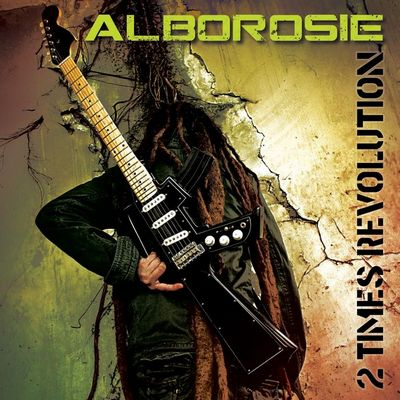

Musecloud

Alborosie - 2 Times Revolution (2011)
01:17
03:30
1. Alborosie - 2 Times Revolution (2011)
2. Beastie Boys - ILL Communication Front
3. Chase And Status - No More Idols
4. Dope D.O.D. - Deal With The Devil